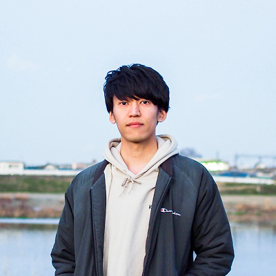
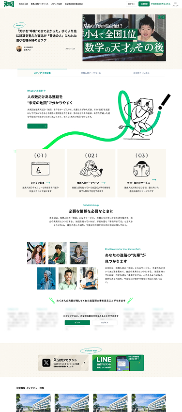
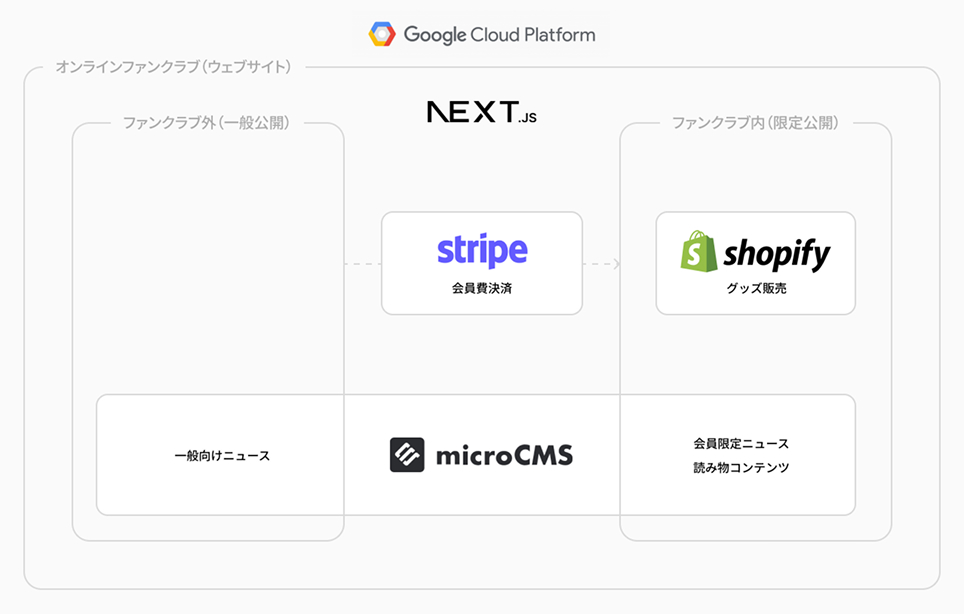
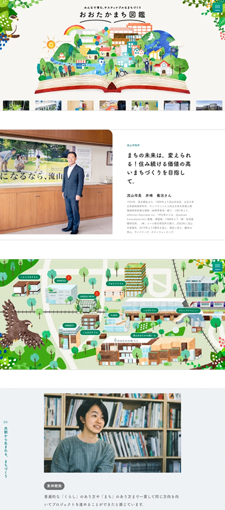
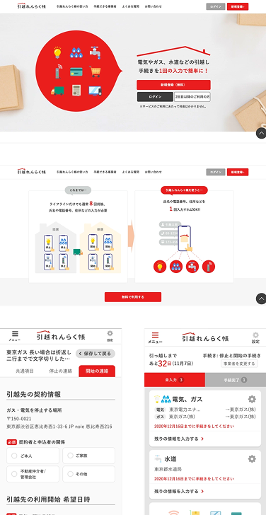
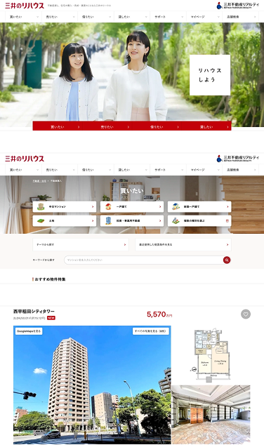
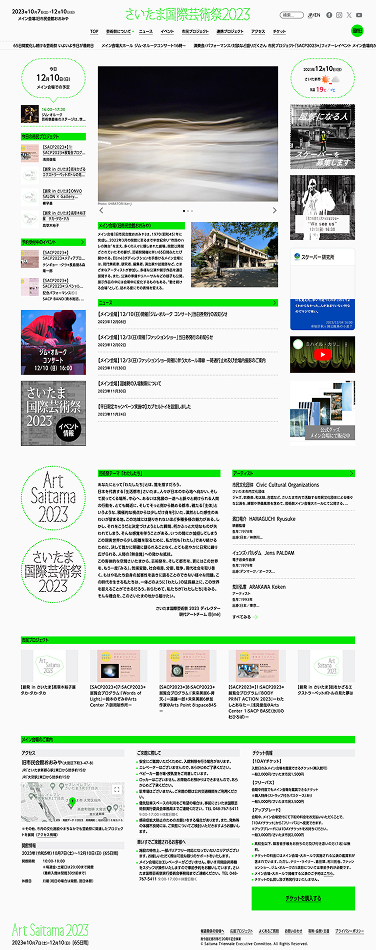
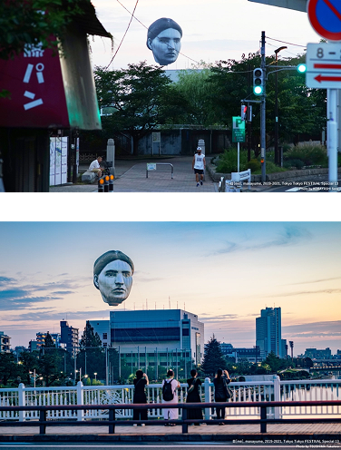
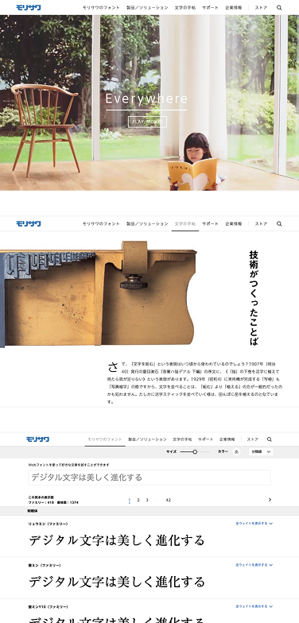
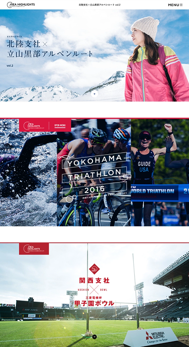

AIを活用した社内システムの構築
担当工程
要件定義、画面デザイン制作、コンポーネント設計
成果・インパクト
AIの活用を前提に複数の社内システムを並行開発する環境で、開発スピードを担保するためのデザインシステムを選定・構築した。shadcn/uiのFigmaデータを採用・運用することでコードとデザインの乖離を最小化し、複数チームが同時並行で開発できる体制を整えた。
千原 凌也

2023年 〜 2026年
要件定義、画面デザイン制作、コンポーネント設計
AIの活用を前提に複数の社内システムを並行開発する環境で、開発スピードを担保するためのデザインシステムを選定・構築した。shadcn/uiのFigmaデータを採用・運用することでコードとデザインの乖離を最小化し、複数チームが同時並行で開発できる体制を整えた。
プロトタイプ制作
要件が定まっていない状態から担当者へのヒアリングを重ね、AIを活用したユースケースを1つのプロダクトとして形にした。曖昧な構想を検証可能な状態に整理することで、企画の意思決定を前に進めた。
要件定義、プロトタイプ制作、ユーザーインタビュー
企画段階からクライアントのイメージをヒアリングし、プロトタイプによる検証を経て要件定義書のたたきを作成。ベンダー選定のためのRFP土台として活用された。構想を実装可能な仕様に落とし込む工程を一貫して担った。
推薦入試情報メディアの立ち上げ・運営
要件定義、画面デザイン制作、ユーザーインタビュー
推薦入試情報メディアの立ち上げ段階から参画し、何を作るかの定義から関与した。KPIやロードマップの策定、機能の優先順位付けや開発スコープの判断など、PdM的な役割も担いながらデザインから実装まで一貫して推進している。

アーティストのファンクラブ会員向けオンラインプラットフォームの構築・運用
構成検討、フロントエンド実装（一部）、運用
会員数10,000名超のオンラインファンクラブを構成検討から実装（一部）・運用まで一貫して担当。有料のファンクラブで、ログイン後に限定コンテンツが見れたり限定グッズが購入できたりする内容になっている。既存のオンラインファンクラブサービスでは機能面、手数料面で不満があり、スクラッチで新規構築を行った。長期運用の中でユーザーの利用実態を継続的に観察し、都度改善を重ねた。

2018年 〜 2023年
流山おおたかの森駅前の商業施設でのSDGsへの取り組みを発信するウェブメディアの企画・制作
企画、画面デザイン制作、開発（一部）、編集、取材、撮影（一部）
SDGsの取り組みを発信したいが方法がないという課題からウェブメディアとして発信する企画を0から立案し、クライアントに提案・受注した。「SDGsをローカライズする」というコンセプトのもと、コンテンツ企画から制作・公開まで一貫して担当。3年間継続して運用を支援した。

ライフライン手続をまとめて自動化するウェブサービスのデザイン制作、ユーザーインタビュー実施
画面デザイン制作、プロトタイプ制作、ユーザーインタビュー
スマートフォン利用を前提とした入力フロー全体を再設計。仮説を立てつつ実際のユーザーへのインタビューを繰り返しながらデザインを改善し、初期登録完了率が約20%改善した。サービスの大規模なリニューアルから3年間継続して改善を担当した。

大量の物件情報が掲載されている大規模コーポレートサイトのリニューアル
画面デザイン制作、プロトタイプ制作
大規模コーポレートサイトのリニューアルにおいて、アジャイル開発の進行に合わせた仕様策定を担当。担当者と直接議論しながらデザインを通じて仕様を固めていく進め方を確立し、開発チームの手戻りを最小化した。

さいたま市で3年に一度開催される国際芸術祭の公式サイト
ディレクション、画面デザイン制作（一部）、フロントエンド実装（一部）
総合ディレクターであるアーティストのコンセプトと、アートディレクターのビジュアルイメージを橋渡ししながら、新聞をモチーフにしたデザインに落とし込んだ。行政主催のイベントとしてアクセシビリティと日英対応を担保し、国内外からの来場者に対応した。芸術祭全体の参加者数は過去最高の約49万人を記録した。

東京都が主催する文化事業企画の事務局運営
プロジェクトマネジメント（事務局運営）
現代アートチーム「目 [mé]」の巨大作品を代々木公園上空で発表するため、事務局を立ち上げて全体進行を主導。申請手続き・広報・警備計画・関連イベントの企画まで包括的に担当した。プロジェクトはTV・新聞・ネットニュース・Twitterトレンドなど多数メディアで取り上げられ、大きな社会的反響を得た。

2013年 〜 2018年
コーポレートサイトとECサイトのフルリニューアル
画面デザイン制作（一部）、ウェブディレクション（一部）
中期経営計画に基づき、社内80名以上へのヒアリングを実施してビジネス要件とユーザーニーズを整理。フォント中心だったサイト構成を複数プロダクト訴求できる構造に再定義し、要件定義から書体管理システムの新規構築まで一貫して担当した。多言語版サイトも新設し、グローバル対応を実現した。制作したコーポレートサイトは第4回Webグランプリ「企業BtoBサイト賞」グランプリを受賞した。

全国の支社・支店・営業所で働く社員にスポットを当て、地域での仕事や活動を紹介するウェブコンテンツの企画・制作
ウェブサイト制作、コンテンツ企画、取材・撮影、進行管理
全国にある支社の社員を案内役とするウェブコンテンツを企画・制作。取材先へのアポイントメントから現地取材・撮影・デザインまでを一貫して担当し、対外的なブランディングとインナーコミュニケーションの両立を実現した。コンテンツは約10年にわたり継続更新された。

以上